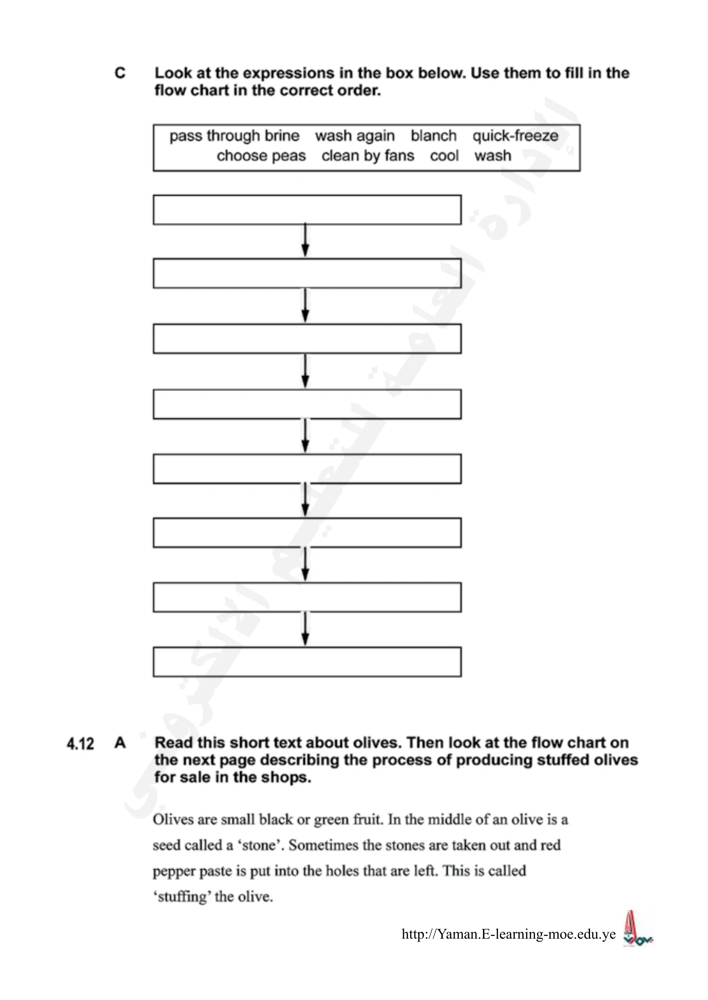

4.12 A Read this short text about olives. Then look at the flow chart on the next page describing the process of producing stuffed olives for sale in the shops. Olives are small black or green fruit. In the middle of an olive is a seed called a 'stone'. Sometimes the stones are taken out and red pepper paste is put into the holes that are left. This is called 'stuffing' the olive. (WB p. 54) Flow chart: [HARVEST OLIVES] → [SEND TO FACTORY] → [SOAK IN CAUSTIC SODA] → [WASH] → [COVER WITH BRINE] → [ADD LACTIC ACID] → [PLACE ON MOVING BELT] → [REMOVE STONES] → [STUFF OLIVES] → [PACK IN JARS] → [SEND TO SHOPS] Match each of these words from the flow chart with its meaning: 1 harvest | 2 soak | 3 place | 4 belt | 5 remove | 6 pack | 7 jars B Use the information in the flow chart to write a description of the process. Use the Present passive. Do not forget to use sequence words and phrases.
[
{
"letter": "1",
"word": "harvest",
"ar": "يقطف / يجني",
"answer": "f"
},
{
"letter": "2",
"word": "soak",
"ar": "ينقع",
"answer": "c"
},
{
"letter": "3",
"word": "place",
"ar": "يضع",
"answer": "b"
},
{
"letter": "4",
"word": "belt",
"ar": "حزام/سير مطاطي",
"answer": "a"
},
{
"letter": "5",
"word": "remove",
"ar": "يزيل / يُخرج",
"answer": "g"
},
{
"letter": "6",
"word": "pack",
"ar": "يرصّ/يعبّئ بإحكام",
"answer": "d"
},
{
"letter": "7",
"word": "jars",
"ar": "برطمانات/عبوات زجاجية",
"answer": "e"
}
][
{
"label_ar": "1) الجني والنقل والمعالجة الكيميائية والتخليل (المربعات 1–6)",
"placeholder": "First, the olives are harvested and sent to a factory. Next, they are soaked in caustic soda and washed. After that, they are covered with brine, and lactic acid is added."
},
{
"label_ar": "2) السير المتحرك ونزع النوى والحشو والتعليب للشحن (المربعات 7–11)",
"placeholder": "Then the olives are placed on a moving belt, where the stones are removed and the olives are stuffed (with red pepper paste). Finally, they are packed in jars and sent to shops."
},
{
"label_ar": "3) النص الكامل المتصل في الدفتر (مثال نموذجي منقّح)",
"placeholder": "First, the olives are harvested and sent to the factory. Next, they are soaked in caustic soda and then washed thoroughly. After that, they are covered with brine and lactic acid is added. Next, the olives are placed on a moving belt where the stones are removed. Then the olives are stuffed with red pepper paste. Finally, they are packed in jars and sent to shops."
}
]{
"wb_ocr_vs_image": "طُوبقت صفحتا WB ص 53–54 مع wb-054.png وwb-055.png: أُزيل شغب OCR بين الخطين 470–473 ('MM ALT MANLAMACSNTINIFIT') وأُثبت تسلسل المربعات الأحد عشر ومطابقات المعاني السبع (1–7 ↔ a–g) كاملةً."
}